A weekly almanac for the night sky
Moonshot Almanac
Every week, one thing worth stepping outside for, with the time and which way to face. No telescope needed. Plus true space-age stories, strange-but-true facts, and the space history hiding in everyday things.
Or get the sky guide by email every Friday
- U.S. times
- Sources on every post
- Calm, no hype
The sky over the central U.S.
Hold it overhead with the bottom edge toward the direction you face. The center is straight up; the edge is the horizon.
This week's sky
Fri, Oct 2 – Thu, Oct 8, 2026
Clock times for events are Central Time (CDT). “Look” times are your local clock time and work across the lower 48. Positions computed for the central U.S. (39°N, 95°W).
This guide covered Fri, Oct 2 – Thu, Oct 8, 2026. A new one goes up every Friday on Facebook and by email, and here soon after.

-
Planet
Saturn at opposition
Early morning, around 7 a.m. CDT
Earth passes between the Sun and Saturn, so it's at its brightest of the year, rises at sunset and is up all night. Around 9:30 p.m., face east-southeast and look about three fists above the horizon for a steady golden point. Distance: about 784 million miles.
-
Moon
The Moon near Pollux
Before dawn, around 6:15 a.m.
Before dawn, around 6:15 a.m., face east-southeast and look about six fists above the horizon: the Moon and Pollux are about 4° apart, less than a fist. The pair shifts a little each night as the Moon moves.
-
Moon
The Moon near Mars
Before dawn, around 6:15 a.m.
Before dawn, around 6:15 a.m., face east-southeast and look about five fists above the horizon: the Moon and Mars are about 4° apart, less than a fist. Mars is a steady orange-red point. The pair shifts a little each night as the Moon moves.
-
Moon
The Moon right beside Jupiter
Before dawn, around 6:15 a.m.
Before dawn, around 6:15 a.m., face east-southeast and look about four fists above the horizon: the Moon and Jupiter are about a finger-width apart (a finger at arm's length is about 1°). Jupiter is a bright, steady cream-white point. The pair shifts a little each night as the Moon moves.
-
Meteors
Draconid meteor shower peaks
Peak expected Thu, Oct 8, around 8 p.m. CDT
Watch the evening of Thu, Oct 8, best from about 8:15 p.m. to 10:00 p.m. From a dark spot away from city lights, expect perhaps 4 meteors an hour at best, fewer from town. Moonlight won't get in the way this year. Lie back, look up at the widest patch of dark sky, and give your eyes 20 minutes; no telescope or binoculars needed.
Mid-week (Mon, Oct 5) the Sun sets around 7:00 p.m. and rises around 7:15 a.m. local time. Calculated with Astronomy Engine; meteor-shower peaks use the International Meteor Organization's values. Clouds happen, so check your local forecast. Updated October 2, 2026.
Newsletter
This week's sky, in your inbox every Friday
One short email: what's worth stepping outside for, when, and which way to face, plus one true story from the space age. Free, calm, and easy to read on your phone.
- One email a week
- No telescope needed
- Unsubscribe anytime
What we post
Four series, one sky
-
Fridays
This Week's Sky
What to look for, when, and which way to face, with a chart computed for U.S. skies. Planets, the Moon, meteor showers, eclipses.
-
Sundays
Space-Age Stories
True history from Sputnik to Artemis, told in under a minute. The people, the near-misses, and what changed.
-
Tuesdays
Sky History
Everyday things that came from the sky: the names of the weekdays and months, moon names, and the calendar on your wall.
-
Through the week
Strange but True
Sourced fact cards about the weird parts of space that turn out to be real, like a day on Venus that outlasts its year.
From the feed
Posts and Reels
A few of our photo posts and Reel covers. The videos play on Facebook.
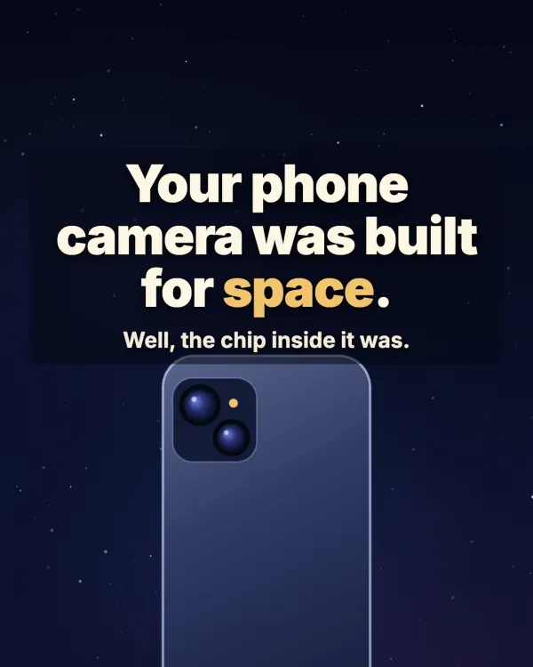
ReelYour phone camera was built for space 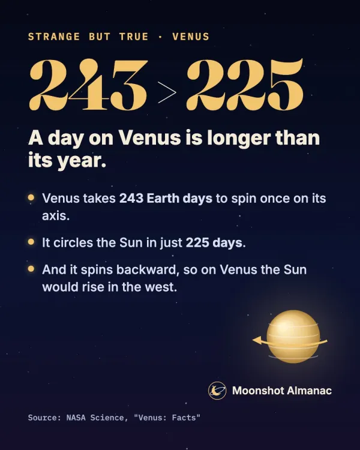
Strange but TrueA day on Venus is longer than its year 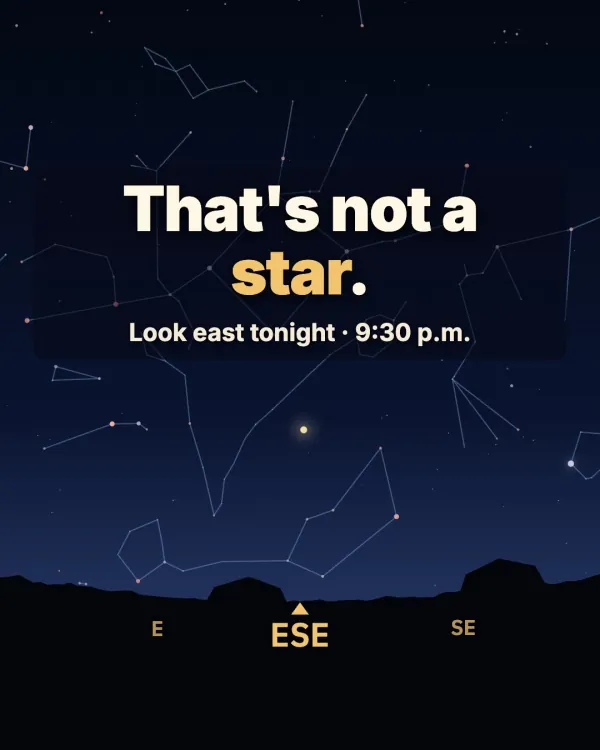
ReelThat's not a star: Saturn at its brightest 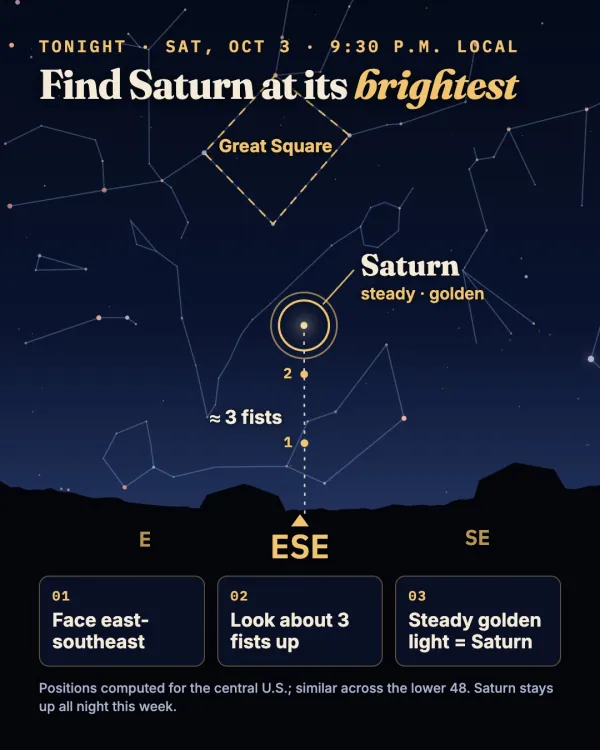
This Week's SkyFind Saturn at its brightest 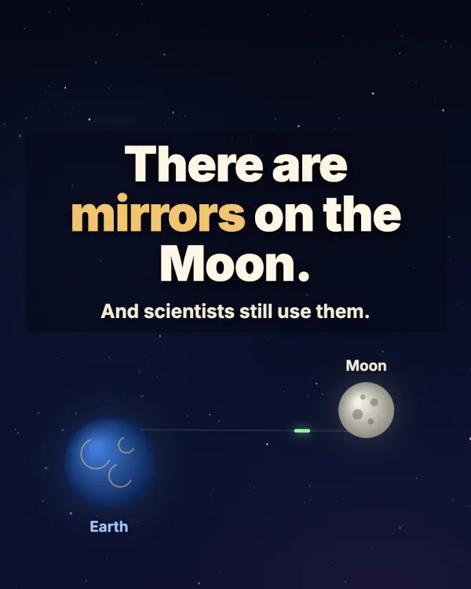
ReelThere are mirrors on the Moon 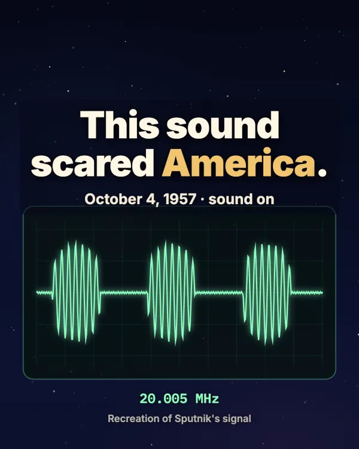
ReelThe sound that scared America in 1957 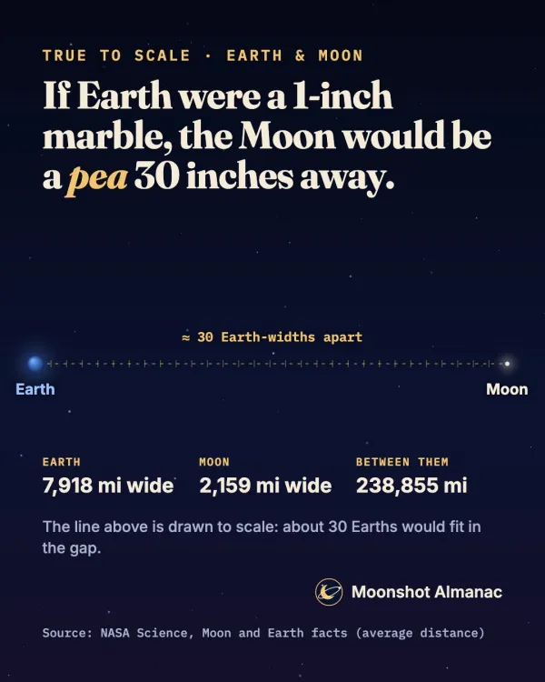
Strange but TrueEarth and the Moon, to scale 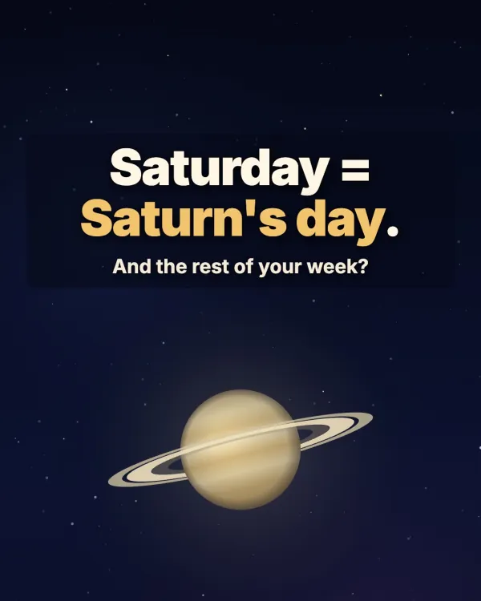
ReelSaturday is Saturn's day 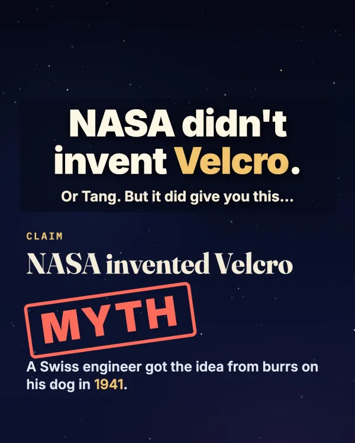
ReelNASA didn't invent Velcro 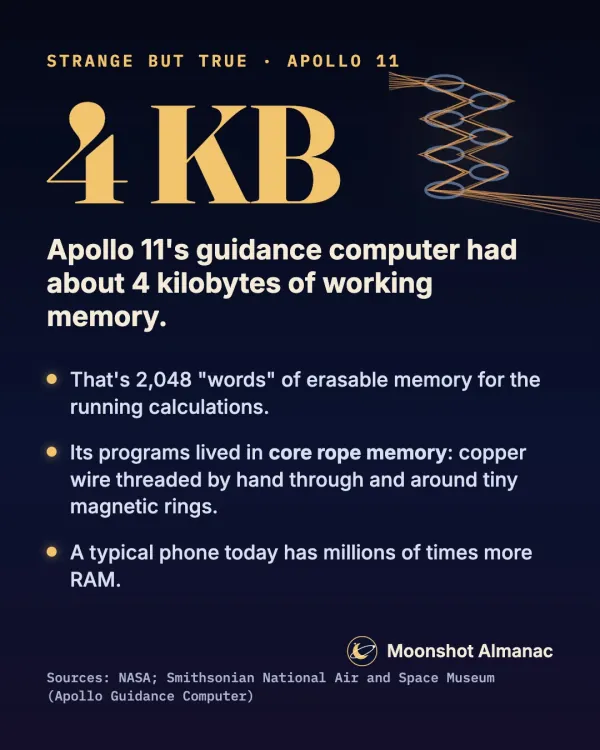
Strange but TrueApollo 11's computer had about 4 KB of memory 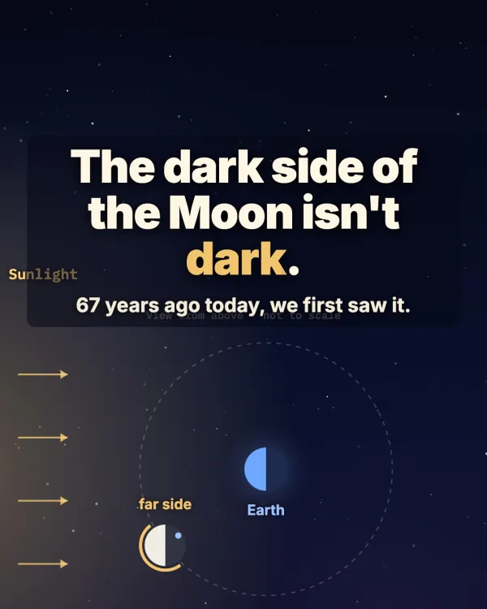
ReelThe dark side of the Moon isn't dark


About us
A small team that loves the night sky
Moonshot Almanac is made by a small, dedicated team of night-sky and space-history enthusiasts. Our favorite moment is when someone steps outside, looks where we said, and finds it. Everything we make is built for U.S. skies and U.S. times.
- Made by enthusiasts
- We've spent a lot of nights looking up, and we're still curious. Each week we decide what's worth your time, work out exactly when and where to look, and design the charts and graphics ourselves.
- Sources on every post
- Every caption says where its facts come from, usually NASA, the Smithsonian, or the observatory behind the result.
- Computed, then checked
- Sky times and positions are calculated for U.S. skies and checked against published almanacs before anything goes out.
- Calm, no hype
- We don't call things "rare" or "once in a lifetime" unless they are, and we're honest about moonlight and clouds.
- Corrections
- If we get something wrong, we fix it and say what changed. We never delete a mistake silently. Spotted one? Use the contact form or email us at moonshotalmanac@gmail.com.
Contact
Get in touch
A question about something you saw in the sky, a correction, a photo you'd like to share, or a brand partnership. We read every message.
- Brands & partnerships
- Tell us about your brand, what you have in mind, and your timing.
- Follow along
- Moonshot Almanac on Facebook
Privacy
This site has no cookies, no analytics, no ads and no trackers. Its fonts and scripts load from this site, not from other companies. If you join the newsletter, your email address (and first name, if you share it) is stored by Kit, the service that sends our emails. We use it only to send the newsletter, and every issue has a one-click unsubscribe link. Messages from the contact form are delivered to our inbox by Web3Forms; we use your details only to reply. If you tap “Use my location” on the sky chart, your position stays in your browser to draw the chart and is never sent anywhere. The site is hosted on GitHub Pages, which may keep standard server logs (see GitHub's privacy statement).